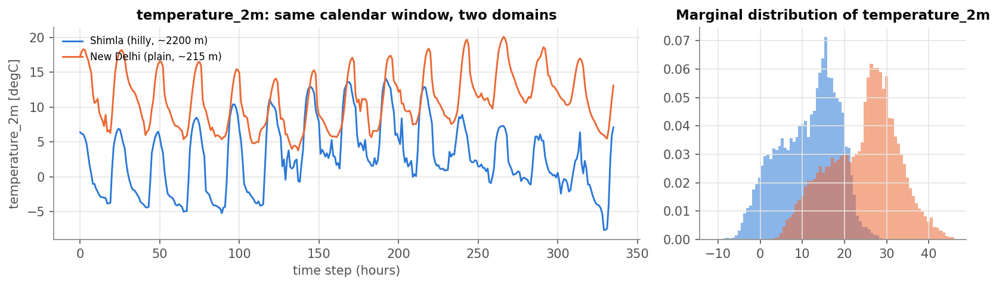
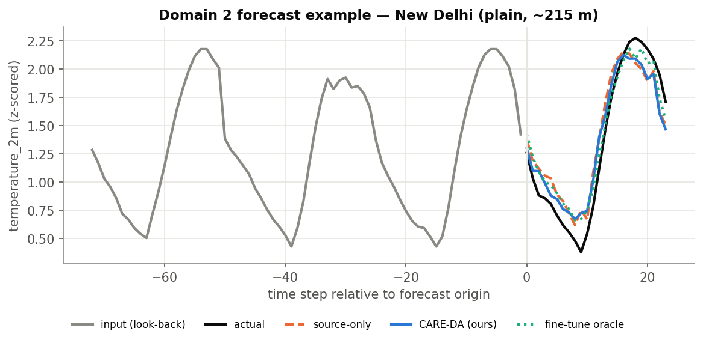
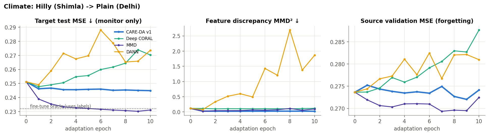
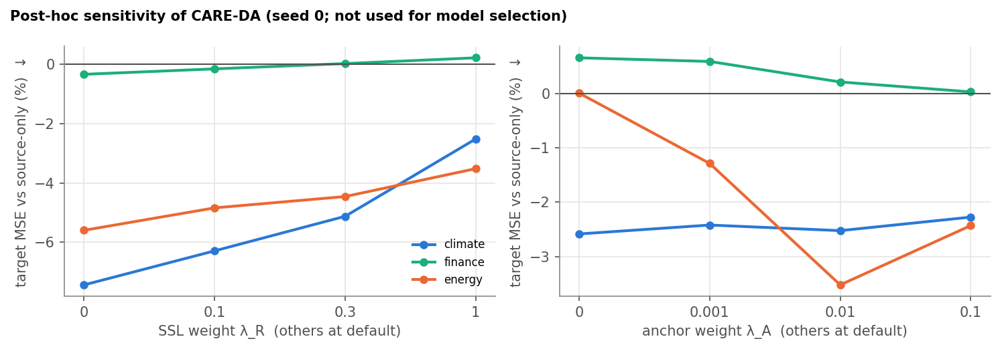
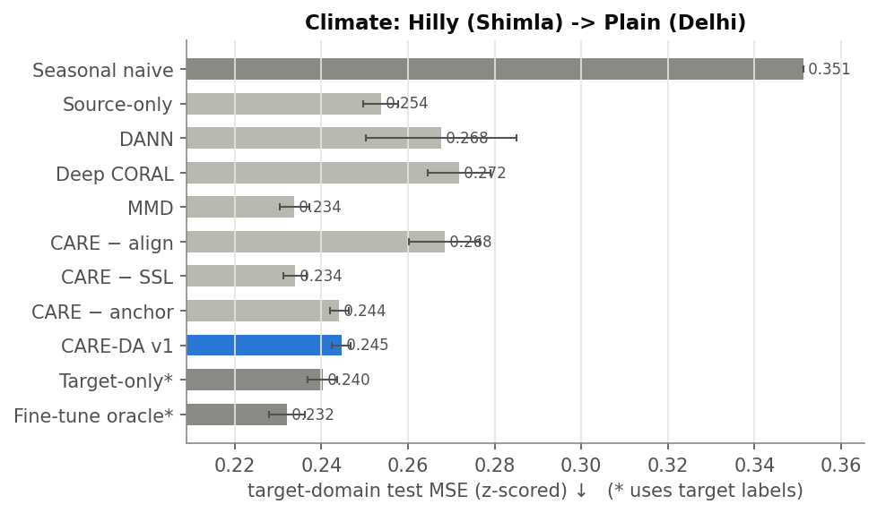
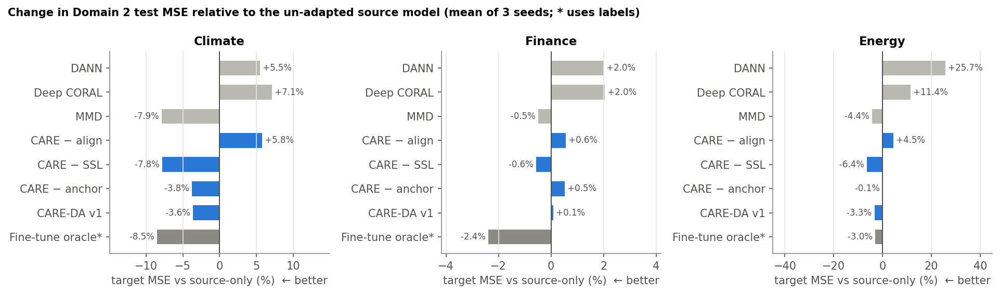
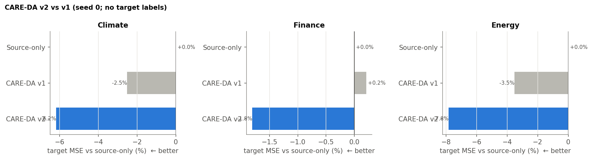

streamlit run app/app.py · Repo: github.com/Ayush20990/ie643-projectThe 20-slide PPT is already submitted. In this meeting you do not re-present the deck. You show that every item in the official brief exists, then you ask the TA to sign off / suggest changes.
One sentence the course asked for: take multivariate time-varying data from Domain 1, build a small forecaster, then make it work on Domain 2 without Domain 2 answers, and give the user an interface + metrics on both domains.
What we built: LiteTCN on Domain 1, CARE-DA adaptation to Domain 2, 3 dataset pairs, logs, a designed loss, metrics, and a Streamlit app that accepts a CSV from either domain.
Lower is better for all four. These are Domain 2 scores (the new place).
| Score | What it means if you have never seen it |
|---|---|
| MSE | Mean Squared Error. Average of (guess − truth)² after we rescale every variable to the same size, so temperature and humidity both count. Big misses get punished extra because of the square. This is the main number in our tables. |
| MAE | Mean Absolute Error. Average of |guess − truth| on the same rescaled values. Easier to picture: “on average, how far off are we?” |
| MASE | Mean Absolute Scaled Error. We divide our MAE by the MAE of a dumb rule: repeat yesterday / last season. Below 1 = we beat the dumb rule. Above 1 = a copy-paste forecast is better than us. It has no units, so climate and stocks can be compared. |
| Key RMSE | Root Mean Squared Error on the one variable a user cares about, in real units. Climate = temperature in °C. Energy = oil temperature in °C. Finance = daily high–low range in %. “Our Delhi temperature guess is off by about 1.4 degrees.” |
Climate (Shimla model → Delhi). 3-seed average, except v2 = seed 0 only. Key RMSE = Delhi temperature °C.
| Recipe | MSE | MAE | MASE | Temp RMSE °C |
|---|---|---|---|---|
| Seasonal naive (no net) | 0.351 | 0.322 | 1.03 | 1.55 |
| Source-only (do nothing) | 0.254 | 0.316 | 1.03 | 1.77 |
| DANN | 0.268 | 0.325 | 1.06 | 1.72 |
| Deep CORAL | 0.272 | 0.323 | 1.05 | 1.69 |
| MMD — best 3-seed no-label | 0.234 | 0.286 | 0.92 | 1.39 |
| CARE-DA v1 (our full design) | 0.245 | 0.306 | 0.99 | 1.65 |
| CARE − SSL (v1 minus homework) | 0.234 | 0.289 | 0.93 | 1.42 |
| CARE-DA v2 (1 seed) | 0.236 | 0.294 | 0.95 | 1.47 |
| Oracle* (uses Delhi answers) | 0.232 | 0.289 | 0.93 | 1.41 |
Energy (transformer 1 → transformer 2). Key RMSE = oil temperature °C.
| Recipe | MSE | MAE | MASE | Oil RMSE °C |
|---|---|---|---|---|
| Seasonal naive | 0.225 | 0.302 | 1.02 | 4.77 |
| Source-only | 0.173 | 0.282 | 0.96 | 4.65 |
| DANN | 0.217 | 0.320 | 1.08 | 5.65 |
| Deep CORAL | 0.192 | 0.298 | 1.01 | 5.23 |
| MMD | 0.165 | 0.274 | 0.93 | 4.49 |
| CARE-DA v1 | 0.167 | 0.276 | 0.94 | 4.52 |
| CARE − SSL — best 3-seed no-label | 0.162 | 0.270 | 0.92 | 4.35 |
| CARE-DA v2 (1 seed) | 0.156 | 0.263 | 0.89 | 4.18 |
| Oracle* | 0.168 | 0.271 | 0.92 | 4.26 |
Finance (IT → pharma). Key RMSE = daily high–low range %.
| Recipe | MSE | MAE | MASE | Range RMSE % |
|---|---|---|---|---|
| Seasonal naive | 1.024 | 0.671 | 1.06 | 1.40 |
| Source-only | 0.561 | 0.496 | 0.79 | 1.08 |
| DANN / CORAL | 0.572 | 0.503 | 0.80 | 1.10 |
| MMD | 0.558 | 0.493 | 0.78 | 1.08 |
| CARE-DA v1 | 0.562 | 0.496 | 0.79 | 1.08 |
| CARE − SSL — best 3-seed no-label | 0.558 | 0.494 | 0.78 | 1.08 |
| CARE-DA v2 (1 seed) | 0.552 | 0.490 | 0.78 | 1.07 |
| Oracle* | 0.548 | 0.487 | 0.77 | 1.07 |
* Oracle uses Domain-2 answers. It is a ceiling, not a method we are allowed to ship. v2 is one seed, so do not treat those rows as the official average. MASE below 1 means we beat “repeat last season.” On finance even the oracle barely moves — there was little to win.
| # | What the brief asked | What we have | Show them |
|---|---|---|---|
| 1 | Understand the problem (Domain 1 → Domain 2, no target labels) | Written in README, slides, report draft | Mouth + this page |
| 2 | Background of forecasting + domain-adaptation methods | DLinear, TCN, RevIN, Ben-David, CoDATS, DAF, CLUDA, RAINCOAT | Mouth (30 sec) |
| 3 | ≥ 3 time-series datasets, two distinct domains each, TA must verify | Climate, finance, energy | Table below. Ask them to approve. |
| 4 | Extract and curate the data (no leakage) | src/data_download.py, data/processed/ | Folder + one CSV |
| 5 | Lightweight Domain-1 forecasting model | LiteTCN, ~0.38M weights, models/*/source_model.pt | App Domain 1 |
| 6 | Adaptation strategy for Domain 2 | CARE-DA v1 (3 seeds) + v2 (1 seed, shipped in app) | App Domain 2 overlay |
| 7 | Implement it and record how it adapts (logs / plots) | results/*/histories.json, train_log.txt, figures | Pictures below |
| 8 | Design a loss for adaptation | L_CARE written and used | Mouth + formula |
| 9 | Explore forecast metrics (goodness of forecast) | MSE, MAE, MASE, key RMSE, GCR, forgetting | App + table |
| 10 | Interface: upload Domain 1 time-varying data → plot + metrics | Streamlit, Domain 1 radio | Live click |
| 11 | Interface: upload Domain 2 time-varying data → plot + metrics | Streamlit, Domain 2 radio + source overlay | Live click |
| 12 | Stage-wise report | Builder exists; draft, not the final Word file | Say status honestly |
| 13 | Prep presentation | 20-slide PPT already submitted | Do not replay it |
If the TA uses a jargon word, translate it to this. All of these appear in our project.
| Word | Plain meaning |
|---|---|
| Time series | Numbers that come in order over time (hourly weather, daily stock, hourly transformer). |
| Multivariate | Several numbers at once. Weather is 7 variables (temp, humidity, pressure…). Not just temperature alone. |
| Look-back L / horizon H | L = how much past we show the model. H = how far ahead we ask it to guess. Climate/energy: 168 hours in, 24 hours out. Finance: 60 days in, 5 days out. |
| Window | One cut of the series: those L past rows, plus the H future rows we want to guess. |
| Domain | A place / setting. Domain 1 = source (old place). Domain 2 = target (new place). |
| Label / answer | The true future. In Domain 1 we have it. In Domain 2, for training, we pretend we do not. |
| Unsupervised domain adaptation (UDA) | Teach the old model the new place using only the new place’s past, never its future. |
| Domain shift | The two places do not behave the same. Delhi is hotter; pharma stocks move differently from IT. |
| Alignment | Make the model’s internal notes (the 128-number summary) look similar in both places, so the “guess tomorrow” head can work in both. |
| Latent / z / summary | Those 128 numbers the encoder squeezes the past into. This is what we align. |
| Checkpoint | A saved snapshot of the weights. “Picking a checkpoint” = choosing which snapshot to keep as the final model. |
| Seed | A starting number for all the randomness (weight start, batch order). Seed 0, seed 1, seed 2 are three independent reruns of the same recipe. If a method is good, it should win on more than one seed. We report the mean and the spread (std) over 3 seeds. CARE-DA v2 so far has only seed 0 — that is why we call it a probe, not a locked result. |
| Epoch | One full pass through the training data. Source model: 20 epochs. Adaptation: 10 epochs. Oracle (with labels): 15 epochs. |
| Batch | A small group of windows updated together (256 from Domain 1 + 256 from Domain 2 in one adaptation step). |
| Learning rate | How big a step the weights take. Source 1e-3 (bigger). Adaptation 3e-4 (smaller, so we do not smash the old model). |
| Baseline | A simple or classic method we compare against, so we can say “did we beat the obvious thing?” |
| Ablation | Take our method and turn one piece off. If turning a piece off makes things worse, that piece was useful. If turning it off makes things better, that piece was hurting. |
| SSL / pretext / homework | A fake task we can score without answers (hide-and-rebuild the past). We hoped it would help. It did not. |
| Negative transfer | Adaptation made Domain 2 worse than doing nothing. DANN and CORAL-alone did this. |
| Oracle | A cheat we are not allowed to use in the real product: start from Domain 1, then fine-tune with Domain 2 answers. It is the ceiling: “how well could we do if someone labelled the new place?” |
| Target-only | Another cheat: train a new model from scratch using only Domain 2 answers. Also not UDA. Used only as a reference. |
| Source-only | Do nothing. Take the Domain 1 model and run it on Domain 2. This is the floor we must beat. |
| Seasonal naive | Even simpler: “tomorrow = same time yesterday / last season.” No learning. If we cannot beat this, the model is useless. |
LiteTCN is the car. It is the only neural network we built. Same engine, same seats, same 128-number “dashboard summary” of the last week. We did not build a DANN network, an MMD network, and a CARE network. We built one car, then tried different driving lessons after it had already learned Shimla.
First we teach the car Shimla for 20 epochs. That parked car is the source model. Then we take a copy of that parked car and give it a new lesson on Delhi. Each name in the table is a different lesson. After the lesson we ask: “how wrong is Delhi tomorrow?”
We repeat every lesson 3 times (seeds 0, 1, 2) except CARE-DA v2, which we only did once so far.
Seasonal naive. No LiteTCN. “Tomorrow at 3 pm = yesterday at 3 pm.” We keep this so we can say the car is at least smarter than copy-paste. MASE uses this as the divisor.
Source-only. Drive the Shimla-trained LiteTCN straight into Delhi. No extra lesson. This is “what happens if we skip the whole project.” Every −3.6% later means “this lesson beat source-only by 3.6%.”
These three start from the same parked Shimla car. They only see Delhi’s past, never Delhi’s tomorrow.
DANN (adversarial). We hire a cop who looks at the car’s dashboard summary and tries to guess: “are you in Shimla or Delhi?” We train the car to make the cop fail. Idea: if the cop cannot tell the two cities apart, the dashboard must look the same, so the “guess tomorrow” part might work in Delhi. In our runs the cop fight went badly. The dashboard became messy and Delhi forecasts got worse, especially energy (+26%).
Deep CORAL. Ignore the cop. Only make the correlations on the dashboard match: if temperature and humidity move together in Shimla, make them move together the same way in Delhi. That alone was not enough. Worse than doing nothing on all three datasets.
MMD. Look at a bag of Shimla dashboard-summaries and a bag of Delhi ones. MMD is a ruler that says “how different are these two bags?” We push that number down. No cop, no extra homework. This simple lesson was the best 3-seed result on climate (MSE 0.254 → 0.234, temp 1.77 °C → 1.39 °C).
Still the same car. We combine four rules in one lesson, because the theory said we needed all of them:
This is the method we designed and reported as ours. It helps (climate MSE 0.245, energy 0.167) but it is not the best, because rule 3 (homework) pulled the car toward “rebuild the past” instead of “guess the future.”
An ablation is not a new car. It is the same CARE lesson with one rule unplugged, so we can see which rule mattered.
CARE − align. Unplug MMD and CORAL. Keep homework + spring. Crashes. So matching dashboards was the useful part.
CARE − SSL. Unplug the hide-and-rebuild homework. Keep alignment + spring. This is the best 3-seed no-label driver overall. Climate almost ties MMD. Energy even beats the labelled oracle.
CARE − anchor. Unplug the spring. Fine on climate, almost useless on energy. So the spring matters when the two cities are very different.
We heard the ablation: homework was the bad rule. So v2 still uses LiteTCN, still starts from the Shimla car, still uses no Delhi answers, but:
We only drove this lesson once (seed 0). It looks better. The app’s Domain-2 button uses this car. We have not proven it over 3 seeds yet.
These use Delhi’s tomorrow. The brief does not allow this in the product. We still ran them so we can say “how much is left on the table?”
Target-only. Buy a brand-new LiteTCN. Teach it only Delhi, with answers. Sometimes worse than adapting the old car (energy), which means Shimla knowledge was useful.
Fine-tune oracle. Take the Shimla car and keep driving it on Delhi with the answer sheet. Best possible if labels existed. Climate can still improve a bit more (MSE 0.232). Finance barely moves (0.548 vs source 0.561). The oracle also forgets Shimla (climate Domain-1 error +14%). Our no-label lessons do not forget.
Say this to the TA: “LiteTCN is the model. DANN, MMD, CORAL, CARE are not other models. They are different adaptation lessons on copies of the same Domain-1 LiteTCN. Ablations are CARE with one lesson-rule removed. The oracle is a labelled upper bound, not a competitor we claim to beat in the product.”
DONE Say it in baby words:
Course examples: hills → plains weather, IT stock → pharma stock. We did both, plus two electricity transformers.

Shimla mean temp ≈ 11.4 °C, Delhi ≈ 24.6 °C. The two places barely overlap. Copying the old model is not enough.
DONE Four forecasting ideas we used: DLinear (a straight line can be strong), TCN (cheap long memory), PatchTST (strong but heavy, later), RevIN (remove this window’s own average so “Delhi is hotter” is less of a problem).
Theory in one line (Ben-David): new-place error ≤ old-place error + how different the two places look inside the model + a leftover we cannot measure without answers. So we keep old skill, make the insides look alike (alignment), and do not smash useful features.
Time-series papers: CoDATS (adversary), SASA (variable links), DAF (forecasting but needs some labels), CLUDA (compare similar windows), RAINCOAT (frequency). Gap we picked: forecasting + no labels + small model.
NEEDS TA YES This is the most important ask in the meeting. The brief says collect at least three time-series datasets with two distinct domains. Ours:
| Benchmark | Domain 1 | Domain 2 | What we predict | Window |
|---|---|---|---|---|
| Climate (Open-Meteo ERA5) | Shimla ~2200 m | Delhi ~215 m | 7 hourly weather vars, key = temperature °C | 168 h → 24 h |
| Finance (Yahoo / NSE) | 5 IT stocks | 5 pharma stocks | return, high-low range, gap, volume | 60 d → 5 d |
| Energy (ETT public) | Transformer ETTh1 | Transformer ETTh2 | 6 loads + oil temp °C | 168 h → 24 h |
~35k hourly rows per climate city (2021–2024). ~3,300 trading days per stock. ~17k hours per transformer. All public, one command: python -m src.data_download.
DONE Six steps: download → fill small gaps → build features → split by date → rescale each domain → cut windows.
data/raw/ and data/processed/<benchmark>/.DONE Name: LiteTCN-Forecaster. File: src/model.py. Weights: models/climate/source_model.pt (same for energy, finance).
The summary z is later where we compare Shimla vs Delhi. That is why the model is built for adaptation, not only for forecasting.
How training works (if they ask): Domain 1 is trained 20 epochs with AdamW, learning rate 0.001, batch 256. We keep the snapshot with the best Domain-1 validation error. Adaptation is 10 epochs, smaller learning rate 0.0003, 256 Domain-1 windows + 256 Domain-2 windows each step. v1 keeps the last epoch. v2 picks the snapshot with the smallest (Domain-1 val error + how different the two summaries still are) — still no Domain-2 answers.
DONE (v1 full) v2 one seed
Name: CARE-DA = Correlation-Aligned, Reconstruction-regularised, Elastic-anchored Domain Adaptation.
v1 homework = hide 30% of Delhi’s past and rebuild it. We ran this on 3 seeds. It hurt.
v2 homework = a forecast-like task on Delhi (still no answers) + extra alignment. The app’s adapted_model.pt is v2, seed 0 only. v1 is kept as adapted_model_v1.pt so we can overlay both.

This is the Domain-2 deliverable in a picture: grey = input, black = real future, orange dashed = Domain-1 model reused, blue = adapted model.
DONE The brief asks us to implement the strategy and record adaptation behaviour. We saved per-epoch logs in results/<ds>/histories.json and train_log.txt, then plotted them.

Left: Domain-2 error while adapting (we watch it; we do not pick the model from it). Middle: are the two summaries getting closer? Right: did Domain 1 get worse? Alignment happens. Domain 1 does not get worse. Smallest gap ≠ best forecast.
DONE This is a required designed object, not just “we trained something”.
v1 (the designed loss we evaluated fully):
L = forecast_error(Shimla) + MMD(z_s, z_t) + CORAL(z_s, z_t) + mask_rebuild(Delhi) + 0.01 × distance_to_old_weights
Ablation: turn off alignment → everything gets worse. Turn off mask-rebuild → everything gets better. So the designed full v1 is honest, but not the best row.

Turning up the rebuild-input weight makes error worse on every dataset. That is a real negative result, and it is why v2 exists.
DONE The brief asks for performance / goodness-of-forecast metrics. We show them in the app and in the tables.
Negative % below = error went down vs just reusing Domain 1.
| Dataset | CARE-DA v1 (3 seeds) | Best no-label, 3 seeds | Oracle (uses Domain-2 answers) | v2 (1 seed) |
|---|---|---|---|---|
| Climate | −3.6% | MMD −7.9% / −SSL −7.8% | −8.5% | −6.2% |
| Energy | −3.3% | −SSL −6.4% (beats oracle) | −3.0% | −7.8% |
| Finance | +0.1% | −SSL −0.6% | only −2.4% | −1.8% |
Delhi temperature RMSE, seed 0: 1.76 °C → 1.47 °C with v2. Oil temp: 4.61 °C → 4.18 °C.
DANN on energy: +26% worse. CORAL alone worse on all three. Say the word: negative transfer.


These two pictures are the metrics deliverable. Alignment helps. Full v1 is not the best. Finance has almost no room even with answers.

v2 vs v1, one seed. Looks better. Do not call it the locked official method until the TA agrees we should run 3 seeds.
WORKING This is the product the brief names: a user gives multivariate time-varying data from Domain 1 or Domain 2 and sees input, actual, forecast, and goodness metrics.
Command: streamlit run app/app.py → http://localhost:8501
sample_inputs/ (you do not need a file).Date, Open, High, Low, Close, Volume.PPT submitted Report is a draft builder
report/build_report.js can build a Word file. It is a draft. Final report is still to lock after the TA’s advice.src/model.py, src/train.py, src/adapt_v2.py, models/climate/, results/climate/summary_target.csv.streamlit run app/app.py.models/<dataset>/source_model.pt (Domain 1) and adapted_model.pt (Domain 2, v2). v1 kept as adapted_model_v1.pt.histories.json enough for “record how the model adapts”?